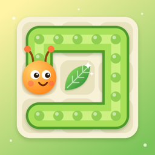

ひとふでいもむし
葉っぱを1回ずつぜんぶ食べる、一筆書きパズル（iPhone）
遊び方
いもむしの頭から、となりの葉っぱへ指でなぞって進みます。同じ葉っぱは1回しか通れません。ぜんぶ食べるとクリアで、いもむしはちょうちょになって飛んでいきます。
- ステージ：全100ステージ・10章。章ごとに、石・一方通行の葉・ワープの穴・しびれキノコ・順番に食べる木の実などの仕掛けが出てきます。ヒントを使わず、もどす回数が少ないほど ★ がふえます（★1〜3）
- 今日のいもむし：毎日かわる1問です（だれでも同じ盤）。時間ともどした回数で点がきまり、ランキングに参加できます
- ヒント：次に進むマスが光ります。1日3回まで無料で、そのあとは動画広告を見ると1回使えます（見るかどうかは選べます）
よくある質問
まちがえた・行きどまりになった
なぞった道をもどると、1つずつもどせます。通ったマスをさわると、そこまでもどります。「もどす」「さいしょから」のボタンもあります。
途中でやめたい
左上の一時停止ボタンから、つづける・やりなおす・もどる を選べます。
音を消したい
画面右上のスピーカーのボタンで、音のオン・オフを切り替えられます。
次のステージが選べない
ステージはクリアすると次が開きます。次の章は、前の章の10ステージ目をクリアすると開きます。
記録を消したい・引き継ぎたい
記録はこの iPhone の中に保存しています（ランキングに名前をのせた場合は、ニックネームと記録だけを送ります。ランキングの画面の「ランキングから自分の記録を消す」でいつでも消せます）。アプリを削除すると記録も消えます。ほかの端末への引き継ぎにはまだ対応していません。
お問い合わせ
不具合やご要望は、メールでお知らせください。お使いの iPhone の機種と iOS のバージョンを書いていただけると助かります。